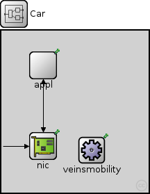
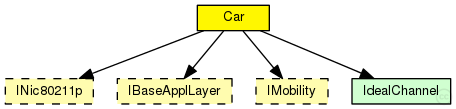
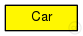

This documentation is released under the Creative Commons license
This documentation is released under the Creative Commons license(no description)
The following diagram shows usage relationships between types. Unresolved types are missing from the diagram. Click here to see the full picture.
The following diagram shows inheritance relationships for this type. Unresolved types are missing from the diagram. Click here to see the full picture.
| Name | Type | Default value | Description |
|---|---|---|---|
| applType | string |
type of the application layer |
|
| nicType | string | "Nic80211p" |
type of network interface card |
| veinsmobilityType | string |
type of the mobility module |
| Name | Direction | Size | Description |
|---|---|---|---|
| veinsradioIn | input |
gate for sendDirect |
| Name | Type | Default value | Description |
|---|---|---|---|
| appl.headerLength | int |
length of the application message header (in bits) |
|
| veinsmobility.x | double |
x coordinate of the nodes' position (-1 = random) |
|
| veinsmobility.y | double |
y coordinate of the nodes' position (-1 = random) |
|
| veinsmobility.z | double |
z coordinate of the nodes' position (-1 = random) |
module Car { parameters: string applType; //type of the application layer string nicType = default("Nic80211p"); // type of network interface card string veinsmobilityType; //type of the mobility module gates: input veinsradioIn; // gate for sendDirect submodules: appl: <applType> like org.car2x.veins.base.modules.IBaseApplLayer { parameters: @display("p=60,50"); } nic: <nicType> like org.car2x.veins.modules.nic.INic80211p { parameters: @display("p=60,166"); } veinsmobility: <veinsmobilityType> like org.car2x.veins.base.modules.IMobility { parameters: @display("p=130,172;i=block/cogwheel"); } connections: nic.upperLayerOut --> appl.lowerLayerIn; nic.upperLayerIn <-- appl.lowerLayerOut; nic.upperControlOut --> appl.lowerControlIn; nic.upperControlIn <-- appl.lowerControlOut; veinsradioIn --> nic.radioIn; }
This documentation is released under the Creative Commons license